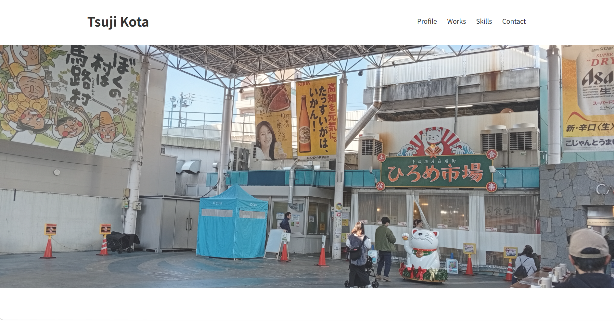
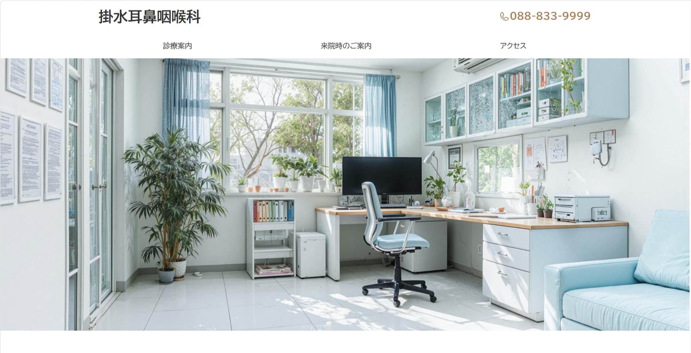

辻滉太
高知県出身。
東京の大学を卒業後、新卒で入った医療系の企業で、Excel作業を効率化するためにVBAを始めたことを機にプログラミングにのめり込みました。
社内で小さな改善を積み重ねるだけでなく、専門的にシステムづくりに取り組める環境で成長したいと思い、転職活動を始めました。
趣味：公共交通機関で遠出、音楽、YouTubeを見る
特技：作詞・作曲（そこそこ）、辛いものに強い

高知県出身。
東京の大学を卒業後、新卒で入った医療系の企業で、Excel作業を効率化するためにVBAを始めたことを機にプログラミングにのめり込みました。
社内で小さな改善を積み重ねるだけでなく、専門的にシステムづくりに取り組める環境で成長したいと思い、転職活動を始めました。
趣味：公共交通機関で遠出、音楽、YouTubeを見る
特技：作詞・作曲（そこそこ）、辛いものに強い

ポートフォリオ用のWebサイトとして最初に作りました。
とはいえ、何も制作物が無い状態だったのでアイデアが思いつかず、先に他のサイトを作ってから仕上げました。

幼いころから耳鼻咽喉科のお世話になることが多かったので、出身地にある架空の耳鼻咽喉科クリニック、というコンセプトで制作してみました。
初めは複数ページで作ることも検討しましたが、小規模なクリニックなら1ページに最低限の情報を収めるほうが病院も患者さんも使いやすいと考え、かなりシンプルな構成にしました。
診療時間の表とGoogleマップの埋め込みを作るのが一番楽しかったです。
初めて触れたプログラミング言語でした。
今最も勉強しているものです。
Webサイトのデザインをちゃんと組むために始めました。勉強中です。
大学時代にやっていました。
仕事とは関係ないですができます。
GitHubのアカウントに今までの制作物を上げています。
模写コーディングも行っています。